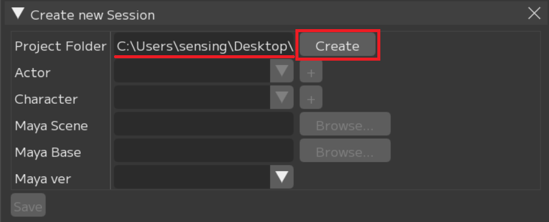
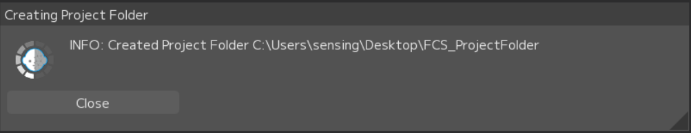
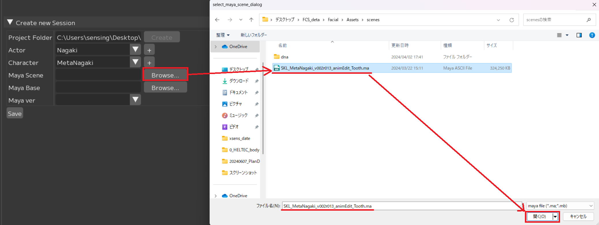
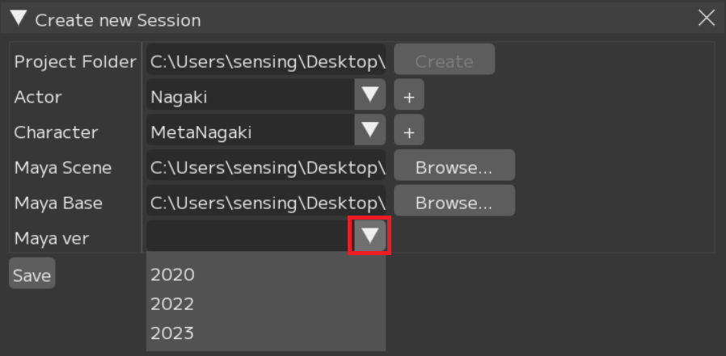
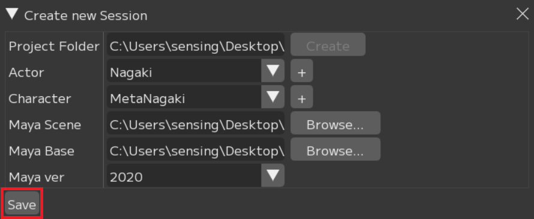
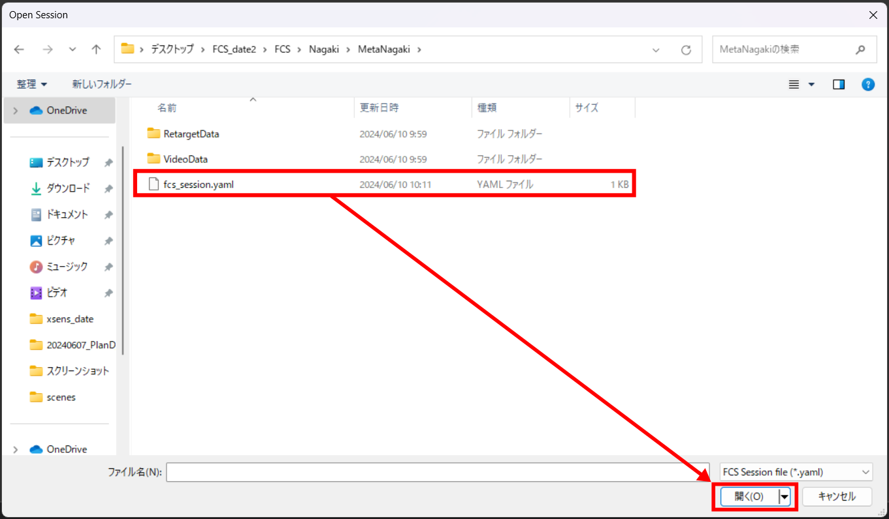
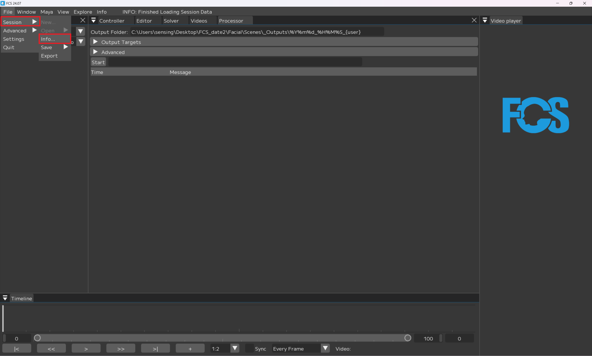

Session作成もしくはオープン
FCSではアクター情報、キャラクター情報、Mayaシーン情報とその解析データを紐づけたファイルのことを「Session」と呼びます。
FCS起動後、Sessionデータへアクセスするため 「New...（新規作成）」または「Open（開く）」を実行します。
Note
初めにSessionに関わる設定を行うことで、Mayaを別途操作することなくFCS上のボタンでスムーズに作業を開始することができます。
Create new Sessionで作成されるフォルダ構造
赤枠：Project Folderで作成されるフォルダ
青枠：Actorで作成されるフォルダ
緑枠：Characterで作成されるフォルダ
.lock/fcs_session.yaml：sessionをSaveした後に作成されるファイル

Facial：動画やMayaシーンデータ等素材を保存する場所
Assets：Mayaのプロジェクトファイル（Assets以下）を保存する場所
RecData：ROM体操やFCSで解析したい動画を保存する場所
Scene：アニメーション出力時のデフォルト出力先
SetData：アニメーション出力で「audio」を選択した場合にはwavファイルが、
「Frame」「Landmark Frame」を選択した場合は連番画像が作成され、保存される
FCS：解析に使用するデータが保存されるプロジェクトフォルダ
Actor：Actorで作成したフォルダ。Actorで入力した名前が表記される
Character：Characterで作成したフォルダ。Characterで入力した名前が表記される
RetargetData（IMG/PARAM）：作成したProfileの編集データ（画像や数値情報）が保存される
VideoData：解析する動画のキャッシュが保存される
.lock：競合を防ぐためのロックファイル。起動時/終了時に自動で作成/消去される
fcs_session.yaml：session情報を保存しているファイル
Sessionの新規作成
File▶Session▶New…を選択
①Project Folder：FCSの作業データを置きたい場所を指定
②Actor：モーションキャプチャアクター名
③Character：3Dモデルのキャラクター名
④Maya Scene：3DモデルのMayaシーンへのパス
⑤Maya Base：Assets、workspace.melがあるフォルダへのパス
⑥Maya Ver：3Dモデルを作成したMayaのバージョンを指定
①Project Folderの設定
Browseボタンをクリックし、Project Folderを指定するためウィンドウを起動します。
FCSのデータを保存したい任意のフォルダを選択
Project Folderを作成します。
Create

問題なく作成できたらポップアップが表示されます。
close 
エクスプローラーで「Facial」「FCS」のフォルダが作成されます。

Note
Project Folder作成後
Project Folder▶Facial▶Assetsフォルダに紐付けるMayaシーンを、
Project Folder▶Facial▶Recdataフォルダに解析したい動画を移動しておくことを推奨します。
※別の場所に保存していてもアクセスできます。


②Actorの設定
「+」ボタンをクリックし、ActorFolderを作成するための 「Create new actor folder」ウィンドウを起動します。
「Actor Name」に登録したい名前を入力
「Actor」＝モーションキャプチャアクター名
Create

問題なく作成できたらポップアップが表示されます。
close
エクスプローラーでProject Folderフォルダ直下に入力したActerフォルダが作成されます。

③Characterの設定
「+」ボタンをクリックし、characterFolderを作成するための「Create new character Folder」ウィンドウを起動します。
「Character Name」の入力欄に登録したい名前を入力
Create

エクスプローラーでActorフォルダ直下に入力したCharacterフォルダが作成されます。
④MayaSceneの設定
Browseボタンをクリックし、MayaSceneを指定するためウィンドウを起動します。
MayaSceneデータのパスを指定 
⑤MayaBaseの設定
Browseボタンをクリックし、MayaBaseを指定するためウィンドウを起動します。
workspace.melがある場所(Mayaシーンのプロジェクト設定で登録している場所)を指定
Attention
FCS上でポップアップするウィンドウにはworkspace.melが表示されません

⑥MayaVerの設定
④で設定したsceneを作成したMayaのバージョンを指定 
全て入力を終えたらSaveボタンを押してください。
Save

エクスプローラーでcharacterフォルダ直下にfcs_session.yaml(FCSファイル)が作成されます。

Note
.lockファイルは
作業中にほかの人からのアクセスを防ぐためのものです。
正常に終了した際には自動で削除されます。
Note
不正に終了するなどして.lockファイルが残ってしまった場合、
FCSの起動時にポップアップから削除するか、
.lockファイルをエクスプローラーで直接削除してください。
既にSessionが作成されている場合
履歴またはfcs_session.yamlファイルからSessionを開いてください。
履歴から開く場合
以前にSessionを起動している場合、File▶Session▶Openの下に履歴が表示されます。
作業したいデータをクリック

fcs_session.yamlファイルから開く場合
File▶Session▶Open▶Open...
OpenSessionウィンドウが開かれたらローカルとネットワークドライブが表示されます。Characterフォルダ直下にあるfcs_session.yamlファイルを選択し、開く 
Seesionを開く際の注意
Sessionの同時起動について
Warning
Sessionの新規作成/Open後、続けて別のSession作成や起動は出来ません。
別のSessionを開きたい場合は、現在のSessionを終了し、FCSの再起動後開きなおしてください。
「⑥Maya Verの設定」をしても反映されない場合
session作成時に設定した項目は File▶Session▶info で確認することができます。 
NewSessionで設定したMayaVerがinfoで反映されていない場合は、info画面のMayaVersionを右クリックし、Editから変更ができます。

Attention
設定の変更後は必ずSaveボタンを押してください